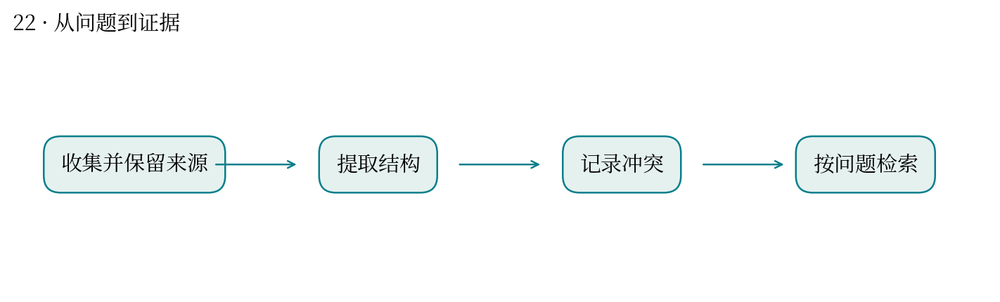
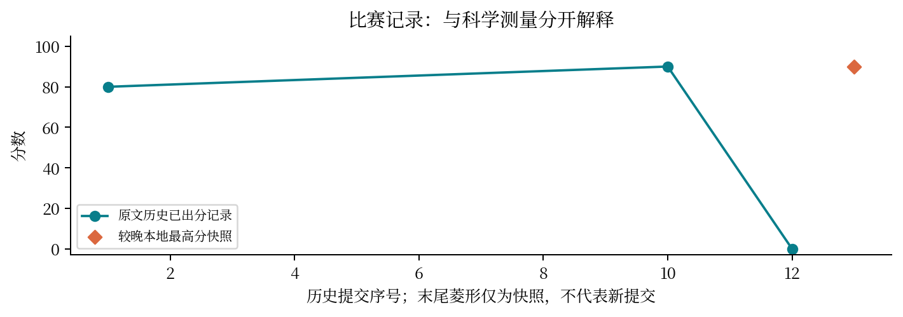

资料越存越多，怎样让它们真正回答研究问题？
最高分快照：90.0 · 2026-10-12T01:11:24+08:00
知识管理需要保存来源、概念关联和冲突状态，使后续检索能回到原文。仅有摘要集合容易丢失适用条件。
制作资料整理 Skill，迭代冲突记录、补件请求与来源连接，并提交干净版本。
历史 v1 为 80 分；较晚快照为 90 分。由于版本包含多个改动，分差不能归因于单一功能。
相似表述不保证同一事实；失效链接、版本更新与相反证据需要显式管理。
与你的植物基因组资料库和课程材料管理直接相连：按研究问题检索，比单纯按文件名分类更有用。
改进需要真实检索任务验证；当前成绩不是长期知识库正确率。


| attempt | 提交时间 | 分数 | 状态 |
|---|---|---|---|
| 51831 | 10-10 23:57:37 | 80.0 | 已出分 |
| 52068 | 10-11 00:54:23 | — | 失败 |
| 52568 | 10-11 02:58:22 | — | 失败 |
| 53351 | 10-11 09:20:27 | — | 失败 |
| 53414 | 10-11 09:41:01 | — | 失败 |
| 53563 | 10-11 10:36:28 | — | 失败 |
| 54529 | 10-11 15:43:13 | — | 失败 |
| 54556 | 10-11 15:50:36 | — | 失败 |
| 54620 | 10-11 16:11:29 | — | 排队中 |
| 55091 | 10-11 18:03:02 | 90.0 | 已出分 |
| 55402 | 10-11 19:02:53 | — | 失败 |
| 56314 | 10-11 20:49:24 | 0.0 | 已出分 |
源文件 SHA256 见 证据清单；用 scripts/build.py 重建图表。